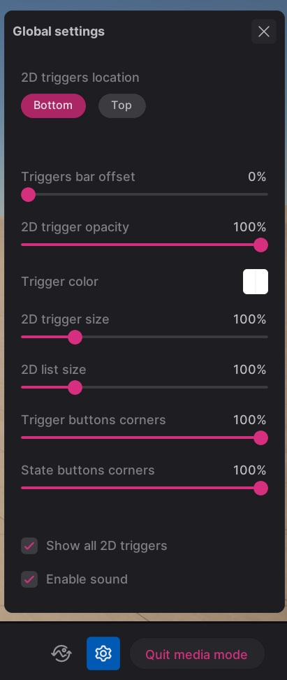
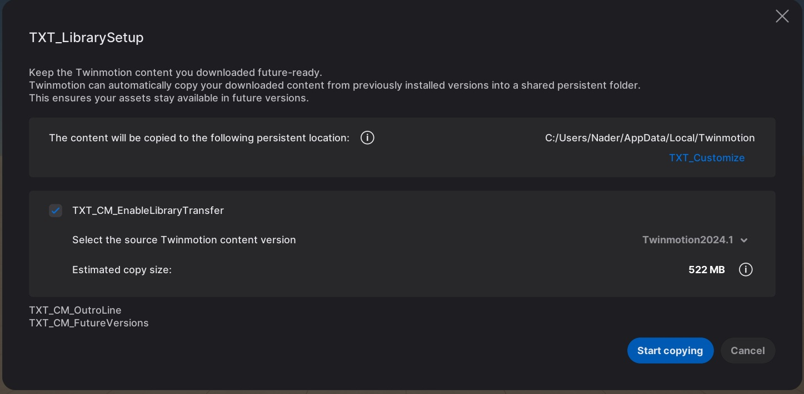

Twinmotion (Epic Games)
Developed through **4D Pipeline**, architecting high-performance tools and engine systems for industry-leading real-time visualization.
Core & Platform Engineering
Maintaining a massive Unreal Engine codebase through major version upgrades.
During my tenure on the Core Team, I ensured code stability and performance across multiple Unreal Engine version upgrades, resolving critical regressions that affected thousands of enterprise users.
- Mac ARM64 Migration: Engineered the packaging pipeline for native Apple Silicon support (Universal Binary), optimizing build times and performance on M-series chips.
- Rendering Pipeline Stability: Debugged complex shader regressions and skeletal mesh tangent recalculation bugs using RenderDoc.
- Automated Validation: Built a comprehensive testing suite for scene serialization, ensuring 100% property parity before and after save operations.
- Memory Optimization: Profiled and resolved VRAM bottlenecks and memory leaks in high-density AEC scenes using Unreal Memory Insight.
Case Study: Scene Capture State Sync
"Resolved a critical motion blur failure in high-resolution exports. Discovered that disabling viewport rendering (to optimize capture) prevented the engine from automatically pushing component updates to the GPU. I architected a custom frame sequence to manually trigger end-of-frame updates, ensuring the render thread had accurate state data before the capture began."
Case Study: Regression Analysis (Shadow Culling)
"Utilized comparative profiling with Unreal Insight to trace a 30% performance drop in shadow rendering back to a specific regression in the engine's primitive culling system following an upgrade. Developed a targeted optimization that restored stable frame rates in complex AEC scenes without sacrificing visual fidelity."
Case Study: Cooked Build Logic Parity
"Resolved a critical discrepancy where Animation Blueprint nodes failed to process input data in optimized cooked builds despite working in the Editor. Restricted from making deep engine-level changes, I implemented a robust architectural workaround that manually intercepted and triggered node post-load logic at runtime, restoring feature parity for the final shipped product."
Tools & Resource Visualization
Empowering users with real-time telemetry and deep asset dependency tracking.

The redesigned Statistics Monitor Panel featuring Overview, Textures, and Meshes tabs.
Resource Monitor & Asset Diagnostics
I transformed the legacy performance panel—which previously only offered a basic overview—into a comprehensive, multi-tabbed diagnostic suite designed for professional AEC workflows.
- Multi-Tab Architecture: Engineered a new UI framework featuring specialized tabs for Overview, Textures, and Meshes.
- Overview Redesign: Re-architected the legacy UI into a high-performance telemetry dashboard for real-time CPU, RAM, and GPU VRAM monitoring.
- Deep Asset Inspection: Developed the Textures and Meshes tabs from the ground up, providing per-asset memory footprints, triangle counts, and usage dependencies.
- Global Replacement: Integrated a one-click replacement system, allowing users to instantly swap heavy assets throughout the entire scene based on diagnostic data.
- Viewport UX: Resolved long-standing navigation issues, including orbit/drag conflicts and scroll-wheel speed sensitivity.
UI Systems & Interaction Architecture
Building scalable interfaces and complex interaction systems for enterprise-scale datasets.
Material System Architecture
Developed scalable material management systems and interaction tools to handle complex enterprise scenes with thousands of unique assets.
- Performance Optimization: Migrated the legacy Material Panel to a virtualized Unreal TileView, resolving UI bottlenecks for 5,000+ materials.
- Multi-drop Material Tool: Engineered a frontend/backend solution for rapid, batched material application across multiple scene objects.
- State Management: Implemented a robust Undo/Redo framework for material and folder operations (create/move/copy), ensuring reliable transaction history.

Virtualized Material Panel and Multi-drop interaction logic.

Physical camera simulation and Auto Focus hunting logic.
Physical Camera Simulation
Bridged the gap between real-world optics and digital visualization by engineering systems that mimic physical hardware behavior.
- Auto Focus & Focus Hunting: Developed the mathematical backend and UI for a new auto-focus system that mimics lens physics, including customizable focus hunting behavior.
- Dynamic Camera Lag: Implemented adjustable camera smoothing algorithms to provide professional-grade smoothing for real-time camera walkthroughs.
Global Settings Framework
Architected a global settings framework to manage and override project-wide parameters across complex configuration states.
- State Overrides: Synchronized parameter overrides across multiple scene variants.
- Automated Previews: Engineered a headless thumbnail capture system for configuration setups, ensuring visual consistency.

Library Transition Subsystems
Developed the UI and logic for the library migration interface, facilitating complex asset mapping and transfer during major version upgrades.
